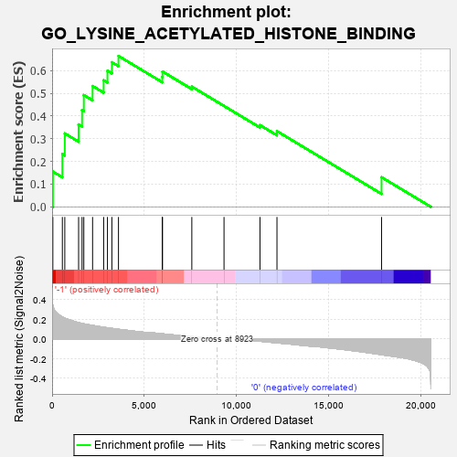
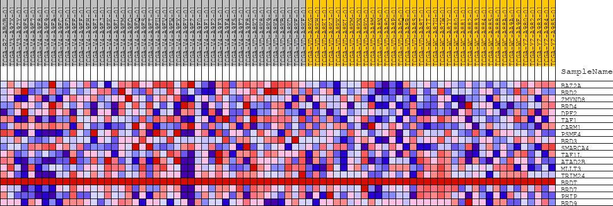
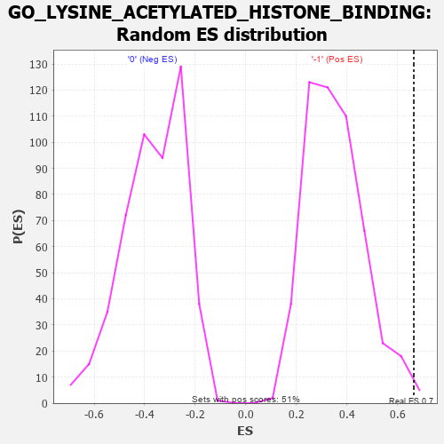

| | | Dataset | GSEAExpression.phenotype_uvm.cls#-1_versus_0 |
| Phenotype | phenotype_uvm.cls#-1_versus_0 |
| Upregulated in class | -1 |
| GeneSet | GO_LYSINE_ACETYLATED_HISTONE_BINDING |
| Enrichment Score (ES) | 0.6640527 |
| Normalized Enrichment Score (NES) | 1.8778423 |
| Nominal p-value | 0.0039525693 |
| FDR q-value | 0.21043615 |
| FWER p-Value | 0.63 |
Table: GSEA Results Summary

Fig 1: Enrichment plot: GO_LYSINE_ACETYLATED_HISTONE_BINDING
Profile of the Running ES Score & Positions of GeneSet Members on the Rank Ordered List
| PROBE | DESCRIPTION
(from dataset) | GENE SYMBOL | GENE_TITLE | RANK IN GENE LIST | RANK METRIC SCORE | RUNNING ES | CORE ENRICHMENT | | 1 | BAZ2A | na | | | 41 | 0.342 | 0.1549 | Yes |
| 2 | BRD2 | na | | | 556 | 0.223 | 0.2323 | Yes |
| 3 | ZMYND8 | na | | | 688 | 0.212 | 0.3229 | Yes |
| 4 | BRD4 | na | | | 1436 | 0.166 | 0.3627 | Yes |
| 5 | DPF2 | na | | | 1624 | 0.158 | 0.4259 | Yes |
| 6 | TAF1 | na | | | 1719 | 0.154 | 0.4919 | Yes |
| 7 | CARM1 | na | | | 2194 | 0.137 | 0.5318 | Yes |
| 8 | PSME4 | na | | | 2794 | 0.119 | 0.5570 | Yes |
| 9 | BRD3 | na | | | 3000 | 0.113 | 0.5990 | Yes |
| 10 | SMARCA4 | na | | | 3239 | 0.107 | 0.6364 | Yes |
| 11 | TAF1L | na | | | 3597 | 0.098 | 0.6641 | Yes |
| 12 | ATAD2B | na | | | 5971 | 0.052 | 0.5722 | No |
| 13 | MLLT3 | na | | | 5982 | 0.052 | 0.5956 | No |
| 14 | TRIM24 | na | | | 7571 | 0.024 | 0.5291 | No |
| 15 | BRDT | na | | | 9316 | 0.000 | 0.4440 | No |
| 16 | BRD7 | na | | | 11264 | -0.023 | 0.3596 | No |
| 17 | PHIP | na | | | 12185 | -0.040 | 0.3330 | No |
| 18 | BRD9 | na | | | 17852 | -0.160 | 0.1300 | No |
Table: GSEA details [plain text format]

Fig 2: GO_LYSINE_ACETYLATED_HISTONE_BINDING
Blue-Pink O' Gram in the Space of the Analyzed GeneSet

Fig 3: GO_LYSINE_ACETYLATED_HISTONE_BINDING: Random ES distribution
Gene set null distribution of ES for GO_LYSINE_ACETYLATED_HISTONE_BINDING